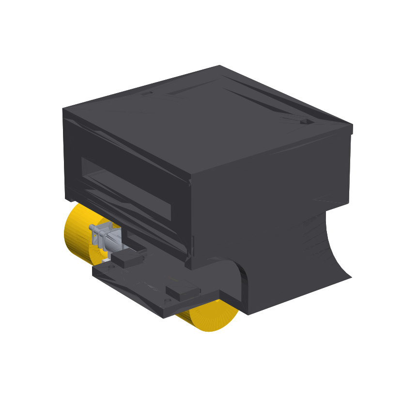
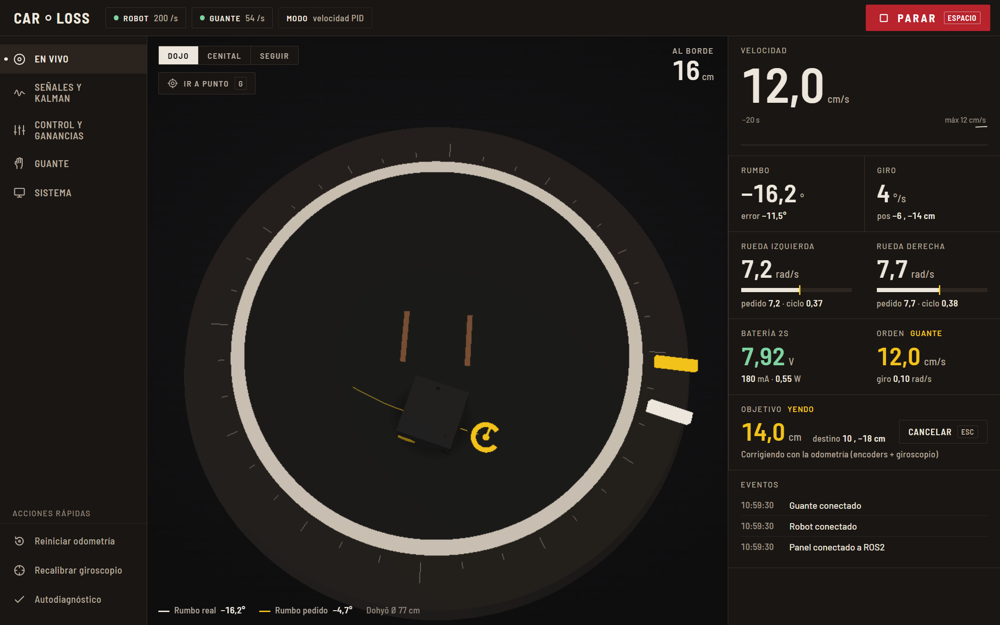
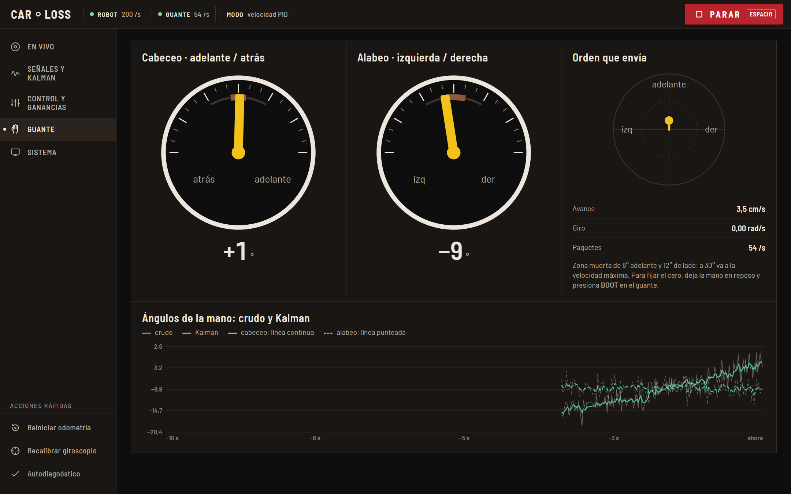
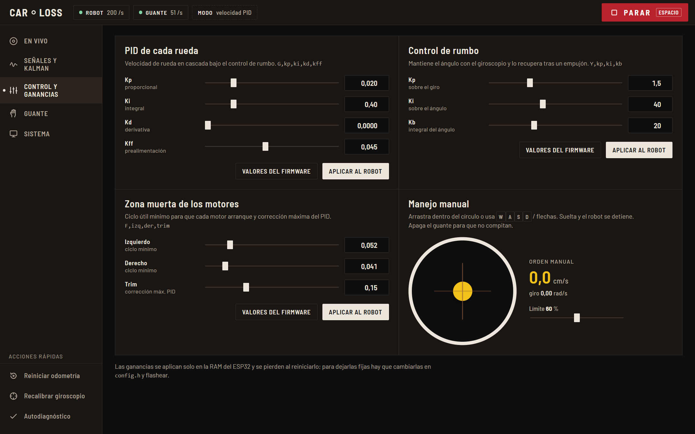
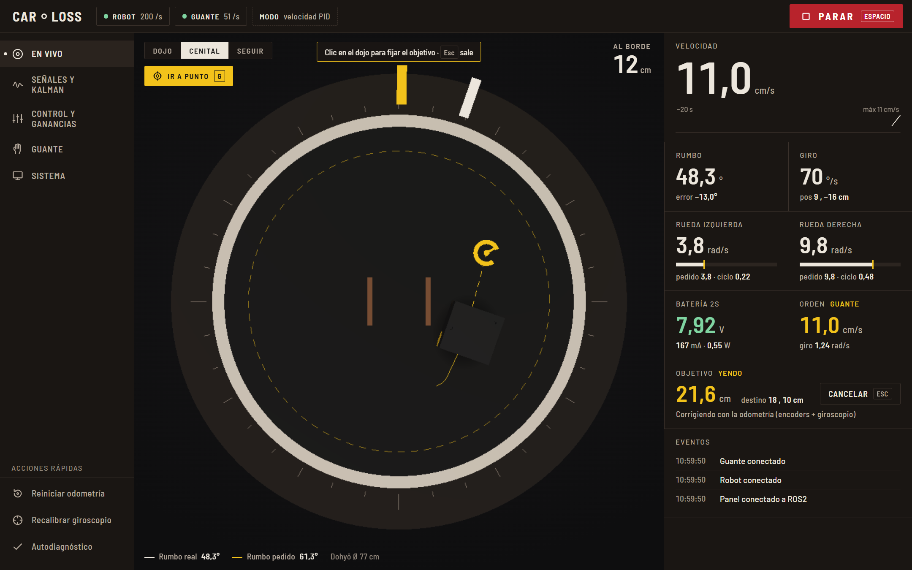
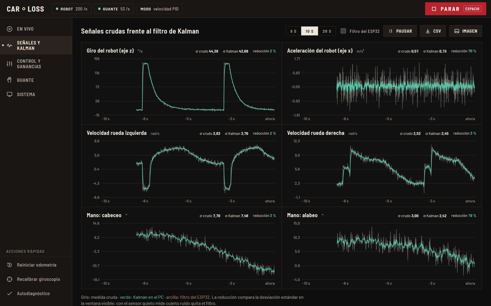

Guía visual, paso a paso, para encender, manejar y cuidar el robot minisumo. No necesitas saber programación.
Un robot pequeño de sumo que manejas inclinando la mano con un guante, o desde una página web en el computador o el celular. Las tres partes se hablan por WiFi.
Lleva un computador pequeño (ESP32), dos motores, sensores de giro y de movimiento, y una batería recargable.
Siente la inclinación de tu mano. Inclinas hacia adelante y el robot avanza; de lado, gira.
Une todo y muestra la consola: el robot en 3D, su batería y botones para manejarlo o pararlo.
Con la batería puesta y el sensor de giro (MPU) en su sitio.
Encendido y puesto en la mano con la que vas a manejar.
Llamado CamiloCC y en la banda de 2,4 GHz.
Con VirtualBox y la máquina virtual Ubuntu.
El voltaje lo ves en la consola, en el recuadro Batería 2S, con el mismo color. Llena marca unos 8,4 V.
Dojo limpio y seco. Es el círculo negro de 77 cm con borde blanco. El polvo hace patinar las ruedas.
Espacio libre alrededor. Si el robot se sale del dojo, que no caiga de una mesa.
Red CamiloCC, banda 2,4 GHz. Conecta el computador a esa misma red WiFi.
En VirtualBox, selecciona Ubuntu y pulsa Iniciar. Espera a ver el escritorio.
En la máquina virtual abre una Terminal y escribe:
ros2 launch minisumo_ros visualizacion.launch.py guante:=true rviz:=falsePonlo en el dojo. Durante 2 segundos calibra su sensor de giro. Si lo mueves, gira raro después.
Mano horizontal y en reposo. Después, cada vez que quieras fijar el "cero", presiona el botón BOOT del guante.
En el navegador de Windows escribe localhost:8081. En el celular, <IP del computador>:8081; la dirección exacta aparece en la consola, en Sistema.

1 2 3 4 5 6 7 8 9 10 11 12El robot copia la inclinación de tu mano. Cuanto más inclinas, más rápido va. A unos 30° va a su máxima velocidad.
Las inclinaciones pequeñas, de menos de 8° hacia adelante o 12° de lado, no mueven el robot. Así no se mueve solo por el temblor de la mano.
Si el robot avanza solo con la mano quieta, deja la mano en reposo y presiona BOOT. Esa posición pasa a ser el nuevo "cero".

En la sección Guante (tecla 4) ves dos diales con la inclinación de tu mano y una flecha con la orden que se le envía al robot.

Ve a Control y ganancias (tecla 3). Arrastra el círculo amarillo en la dirección en que quieres que vaya el robot. También puedes usar las teclas W A S D o las flechas.
Al soltar, el robot se detiene. Con Límite bajas la velocidad máxima mientras practicas.
Apaga el guante mientras usas el pad, para que no den órdenes distintas al mismo tiempo.
El robot en el centro del dojo, mirando hacia la derecha de la vista Cenital.
Pulsa Reiniciar odometría, abajo a la izquierda. El robot queda en (0, 0).
Botón Ir a punto o tecla G. Aparece un círculo punteado: es el área segura.
Dentro del círculo punteado. El robot gira, avanza y se detiene a menos de 2 cm del punto.

El marcador amarillo es el destino y la línea punteada, el camino. En Objetivo ves cuánto falta. Cancelar o la tecla Esc lo detienen.
Pulsa PARAR o la barra espaciadora. El robot ignora el guante y el pad hasta que pulses Liberar en la franja roja.
| Dónde | Verde | Ámbar | Rojo |
|---|---|---|---|
| Conexión (arriba) | Conectado | Llegan pocos datos | Gris: sin datos |
| Batería | Más de 7,0 V | Cárgala pronto | Menos de 6,6 V: cárgala |
| Borde del dojo | Blanco: lejos | A 12 cm del borde | A 6 cm: ¡casi fuera! |
| Lo que ves | Qué hacer |
|---|---|
| "ROBOT sin datos" o "Esperando al robot" | Revisa que el robot esté encendido y que el hotspot esté en 2,4 GHz. Apágalo y préndelo. |
| "GUANTE sin datos" | Enciende el guante con la mano quieta. Revisa que esté cerca del celular. |
| La consola no abre | Revisa que el paso 3 (la terminal) siga corriendo. Escribe bien localhost:8081. |
| El robot avanza solo con la mano quieta | Mano en reposo y presiona BOOT en el guante. |
| El robot gira raro o no va recto | Déjalo quieto y pulsa Recalibrar giroscopio. Espera 2 s. |
| "Ir a punto" lo lleva a otro lugar | Antes de dar clic, ponlo en el centro mirando a la derecha y pulsa Reiniciar odometría. |
| La batería sale "—" | El cable de la batería al medidor (INA219) está suelto, o el interruptor está apagado. |
| El robot no responde después de "Liberar" | Espera 2 s: el sistema se recupera solo. Si no, repite el paso 3. |
El robot mide su movimiento cientos de veces por segundo. Esas medidas vienen con "ruido" (pequeñas variaciones). La consola muestra cómo los filtros las limpian.

La medida tal como llega del sensor, con ruido.
La misma medida limpia, con el filtro de Kalman.
Cuánto ruido quitó el filtro, en %. Se ve mejor con el robot quieto.
Botón CSV para abrirlos en Excel. Botón Imagen para guardar las gráficas. Pausar congela la vista.
La consola se adapta al celular: desliza hacia arriba para ver la telemetría bajo el dojo.